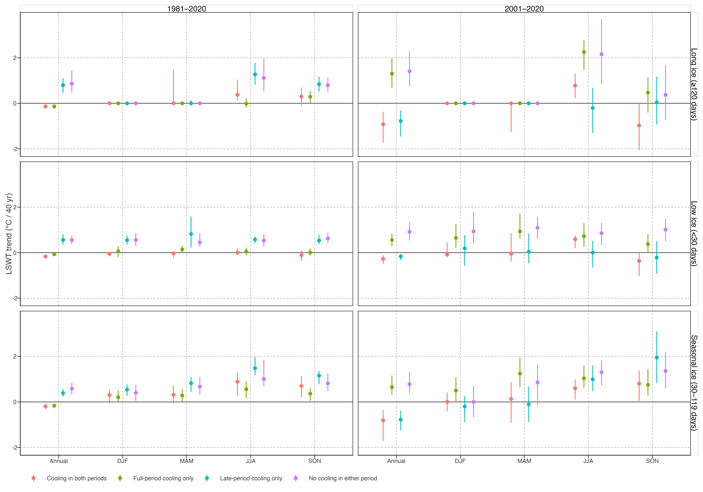

Seasonal and Ice Diagnostics for Cooling Trajectories
Question and evidentiary boundary
Some lakes in mid- to high-latitude North America and mid-latitude Eurasia may show late-period cooling or a reduction in warming speed. One possible explanation is increased cold-season or warm-season inflow from glacier melt. This is a useful hypothesis, but the present lake-temperature and ice-duration outputs cannot establish it: they do not identify glacier-connected catchments or measure inflow temperature and discharge.
北美中高纬度和欧亚中纬度部分湖泊可能在后期降温或减速。冰川融水冷入流是可检验假说，但当前数据没有 glacier-catchment 连通性、入流温度或流量，不能直接归因。
The immediate objective is therefore diagnostic: determine whether either full-period or late-period cooling has the seasonal signature expected from a warm-season cold-inflow mechanism, and describe its relationship with lake ice duration and broader atmospheric forcing. No direction of ice-duration change is pre-specified.
近期目标是诊断而非归因：全期与末段降温均检验其季节性指纹，并描述它与冰期变化和大气强迫的关系；不预设冰期变化方向。
Predeclared diagnostic sequence
1. Define response cohorts before inspecting seasonal patterns
Use raw annual mean LSWT, the canonical primary series. Report full-period and late-period cooling definitions in parallel; neither is subordinate.
| Cohort | Definition | Purpose |
|---|---|---|
| Full-period cooling | Raw annual Theil–Sen slope over 1981–2020 is below zero. | Identifies lakes whose long-run annual LSWT decreases. |
| Provisional difference-based deceleration | Sen slope of raw annual warming speed over 1982–2020 is below zero. | Retained only for sensitivity comparison; its dispersion is too high for cohort definition. |
| Late-period cooling | Theil–Sen slope of raw annual LSWT over a predeclared late window, initially 2001–2020, is below zero. | Separates a late reversal from an overall cooling record. |
| Late-period slowdown | Late-window slope is lower than the corresponding early-window slope, initially 1981–2000. | Tests a change in trajectory without treating a detected breakpoint as a physical event. |
先定义湖泊 cohort，再看季节结果。全期与末段定义应并列报告；不要先看到 JJA 信号后再倒推筛选条件。
Step 14 (trajectory-diagnostics) is the explicit producer for these full- and late-period slopes, seasonal trends, ice-day trends, and three non-equivalent trajectory indicators. The QMD layer only reads its outputs.
Step 14 负责全期/早晚期趋势、季节趋势与冰日趋势；qmd 不临时计算。
2. Test the warm-season signature
Glacier meltwater is expected to be most relevant during the warm season, when melt and discharge are largest. The primary seasonal diagnostic is therefore the JJA raw LSWT slope. For every cohort, compare JJA with DJF, MAM, and SON slopes rather than examining JJA alone.
冰川融水的首要季节诊断是 JJA，但必须与 DJF、MAM、SON 并列比较，不能只挑选夏季结果。
Support for the hypothesis would require a coherent pattern: cooling/decelerating lakes should have disproportionately negative or weakened JJA trends relative to comparable non-cooling lakes, with an interpretable geographical concentration. A negative JJA slope alone is not sufficient.
支持性证据应是连贯组合：冷却/减速 cohort 的 JJA 趋势相对对照组更负或更弱，并有可解释的空间集中；单独的 JJA 负趋势不够。
3. Separate ice-state and liquid-water interpretations
Annual LSWT includes the 0 °C all-ice state. Compare annual ice-day trends and, where necessary, seasonal temperature trends within strata of baseline ice duration. The key question is whether annual cooling/deceleration is primarily associated with changing ice exposure or remains visible in the warm-season liquid-water signal.
年均 LSWT 混合冰态与液态水温。应按基线冰期分层，比较年冰日趋势和季节温度趋势，判断信号是否仍存在于暖季液态水温中。
Useful contrasts include:
- seasonally frozen versus low-ice lakes;
- decreasing versus stable/increasing annual ice duration;
- similar latitude/elevation bands, to avoid treating the global thermal gradient as a mechanism.
4. Require catchment evidence before invoking glacier meltwater
An eventual glacial-inflow claim requires at least one external glacier or catchment data source and a lake-to-upstream-catchment linkage. Geographic proximity to a glacier, latitude, elevation, or continent is not evidence of hydrological connection.
若要声称冰川融水机制，至少需要外部冰川/流域数据和湖泊—上游流域连通关系。仅凭距冰川近、纬度、海拔或大洲都不是水文连通证据。
The minimum evidence chain is:
glacier-connected catchment
→ warm-season melt/discharge or cold-inflow indicator
→ disproportionate JJA cooling or slowdown
→ robustness after ice-duration and atmospheric-forcing contrastsAlternative explanations to retain
The same seasonal pattern could arise from cloud/radiation changes, precipitation and non-glacial runoff, wind-driven mixing, evaporative cooling, local land-cover change, satellite retrieval issues, or sampling/ice-state artefacts. The diagnostic should report these as alternatives, not as residual footnotes.
相同季节信号也可能来自辐射、降水与非冰川径流、风混合、蒸发冷却、土地覆盖、遥感反演或冰态处理。它们应是并列替代解释，而非附注。
Planned deliverables
- A cohort table with full-period and late-period definitions.
- A seasonal slope comparison for annual/DJF/MAM/JJA/SON, stratified by baseline ice duration.
- A map of the diagnostic cohorts, explicitly descriptive.
- A decision on whether the observed pattern justifies acquiring glacier-catchment data.
交付物依次为：cohort 表、季节趋势对比、描述性空间图，以及是否值得引入 glacier-catchment 数据的决策。
First-pass results (raw annual/seasonal data)
Step 14 identifies 20,931 lakes with a negative late-period (2001–2020) annual Theil–Sen slope. Of these, 19,864 occur at \(|latitude| \geq 45°\). Their median late-period annual trend is -0.77 °C per 40 years. Their median JJA trend is slightly positive (+0.02 °C per 40 years), while the corresponding non-cooling lakes have a median JJA trend of +1.91 °C per 40 years.
Step 14 识别出 20,931 个末段年均降温湖泊，其中 19,864 个位于 |纬度|≥45°。其年均中位趋势为 -0.77 °C/40 年；JJA 中位趋势略正（+0.02），但显著低于非降温湖泊（+1.91）。
Figure 1 keeps the ice analysis modular: it reports raw thermal and ice-state strata without making glacier attribution part of Chapter 1. The parent chapter links here only when the cooling branch is retained in a future manuscript.
Figure 1 保持冰模块独立：仅报告原始温度趋势与冰态分层，不把冰川归因写入 Ch1。未来论文是否纳入该支路，可独立决定。
Only 7,638 mid/high-latitude late-cooling lakes (38%) have JJA as their most negative late-period season under the predeclared criterion. This is a meaningful summer-associated subgroup, not a dominant signature of all cooling lakes. The median annual ice-day trend in this group is negative both over the full period (-14.8 days per 40 years) and late period (-16.6 days per 40 years). This documents the observed ice-duration co-pattern; it does not test a pre-specified longer-ice explanation.
仅 7,638 个（38%）中高纬末段降温湖泊以 JJA 为最负季节。它是值得研究的夏季关联子群，不是全部降温湖泊的主导指纹。其冰日趋势为缩短；这只是观测到的冰期共变，不对应预设方向。
The summer-associated subgroup is consistent with the proposed cold-inflow hypothesis, but it is equally compatible with radiation, evaporation, wind mixing, precipitation/runoff, or retrieval explanations. Glacier meltwater must remain a hypothesis until lake–catchment connectivity and inflow observations are added.
夏季关联子群与冷入流假说相容，但同样可能来自辐射、蒸发、风混合、降水/径流或反演问题。补齐湖泊—流域连通与入流观测前，冰川融水只能是待检验假说。